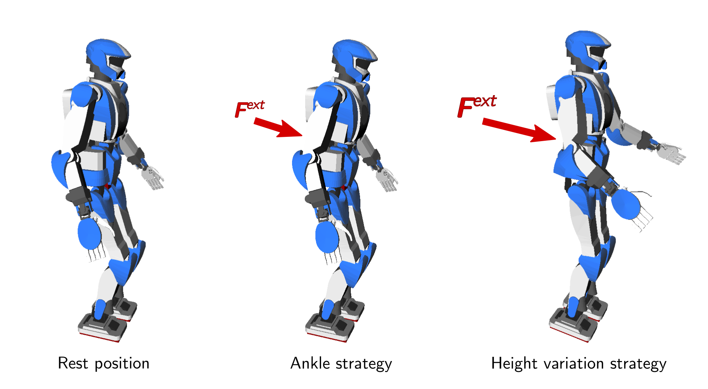

The variable-height inverted pendulum is a point mass model that extends the linear inverted pendulum
model by removing
its constant center-of-mass height assumption. This extension introduces a new
control input, the leg stiffness, that enables a "height-variation strategy"
for balance recovery and locomotion over uneven terrain.
Assumptions
Robots, whether fixed-base or mobile, are usually modeled as rigid
bodies connected by actuated joints. The general equations of motion for such systems are:
M(q)q¨+q˙⊤C(q)q˙=S⊤τ+τg(q)+i=1∑NJi⊤fi,where q∈C belongs to the configuration space of the
robot, and includes both actuated and unactuated coordinates. Actuated
coordinates are typically joint angles that are directly controlled by motors.
Unactuated coordinates are, for mobile robots, the six degrees of freedom for
the position and orientation of the floating base (a frame attached to any of
the robot's bodies) with respect to the inertial frame. The configuration
q is typically represented by a high-dimensional vector. In these
equations, Ji is the Jacobian of the ith
contact constraint Ji(q)v=0, and fi is the
corresponding force (for a point contact) or wrench (for a surface contact)
applied by the environment onto the robot at the corresponding contact frame.
Centroidal dynamics
The first working assumption (Assumption 1) shared by point mass models is
to assume that the robot has sufficiently powerful actuators so that the joint
torques $bftau$ can take any value to realize the actuated part of the
equations of motion above. What remains are the Newton-Euler equations that correspond to the six unactuated
coordinates of the floating base:
[mp¨GL˙G]=[fτG]+[mg0]On the left-hand side: pG is the position of the center of
mass (CoM) and LG is the net angular momentum around the CoM,
while on the right-hand side: f is the resultant of contact forces,
τG is the moment of contact forces around the CoM, m is
the robot mass and g is the gravity vector. This model is called
centroidal dynamics.
Zero angular momentum
The second assumption (Assumption 2), also shared by point mass models, is that
there is no angular momentum around the center of mass: L˙G=0. With this assumption, the moment of contact forces around the
CoM also vanishes: τG=0. This is the same
assumption made in the linear inverted pendulum model (LIP), and it is why
early humanoid robots walked with locked arms.
Where the variable-height inverted pendulum (VHIP) departs from the LIP is that
we do not assume a constant center-of-mass height (Assumption 3 of the linear
inverted pendulum model). In the LIP, forcing the CoM to move on a horizontal
plane results in linear dynamics, which makes further computations easier. In
the VHIP, the CoM is free to move vertically, resulting in a nonlinear but more
expressive model.
Equations of motion
Let us consider the zero-tilting moment point (ZMP) Z of the contact wrench,
defined as the point on the ground where the moment of contact forces is
vertical. Since τG=0 (Assumption 2), the contact
wrench is fully characterized by its resultant f and the position
pZ of the ZMP. The resultant force can thus be written as:
f=mλ(pG−pZ)where λ>0 is a free quantity with SI unit
s−2, which we can interpret as a stiffness coefficient
(normalized by mass). Substituting into Newton's equation f=m(p¨G−g), we obtain the equation of motion of the VHIP:
p¨G=λ(pG−pZ)+gThis equation has two control inputs: the ZMP position pZ, which
must lie inside the ZMP support area S, and the
normalized leg stiffness λ, which must be positive by contact
unilaterality (the robot can push on the ground, but not pull). In practice,
actuation limits further restrict λ to an interval
[λmin,λmax] that depends on the robot's joint
torque capabilities and instantaneous configuration.
In this model, the robot is seen as a point mass concentrated at G,
resting on a massless leg of variable length in contact with the ground at
Z. The stiffness λ controls how hard the robot pushes
along this leg, with a larger λ corresponding to pushing harder
on the ground.
Relationship to the linear inverted pendulum
When the CoM is constrained to a constant height h above the ground,
the vertical component of the equation of motion forces z¨G=0, which implies λ=g/h. The stiffness becomes a constant,
and the VHIP equation reduces to:
p¨G=ω2(pG−pZ)where ω2=g/h is the natural frequency of the linear inverted
pendulum. The latter is thus a special case of the VHIP where λ
is fixed to ω2 and only the ZMP pZ remains as control
input. This natural frequency also gives us a reference against which we can
define formally what it means for λ to "push harder" on the
ground: when λ>ω2, the leg pushes hard enough on its
contact to raise the CoM height; when λ=ω2, the CoM
height stays constant; and finally, when λ<ω2, the CoM
drops down.
Height-variation strategy
In the LIP model, the only mechanism available to the robot for balance
recovery is to move its ZMP within the support area. This is known as the
ankle strategy as, for a humanoid standing on flat ground, ZMP adjustments
are mostly realized by ankle torques. The VHIP opens up a second mechanism:
varying the leg stiffness λ, which physically corresponds to
pushing harder or softer on the ground.

Koolen et al. (2016)
studied this height-variation strategy in detail for a two-dimensional
variable-height inverted pendulum with a point foot. They showed that the set
of states from which balance can be achieved is strictly larger with the VHIP
than with the LIP. In particular, when the ankle strategy is exhausted, that is
when the ZMP has been pushed to the edge of the support area and cannot move
further, the robot can still increase λ to push harder on the
ground, raising its center of mass and generating additional horizontal
deceleration. The two strategies complement each other: the ankle strategy can
be used first as it is cheaper and effective, and the height-variation strategy
can kick in when the ZMP saturates its bounds.
The height-variation strategy is however a finite resource. Pushing harder on
the ground raises the center of mass, and the robot can only raise its CoM so
far before hitting kinematic joint limits (legs fully extended) or joint torque
limits. The sequence above depicts this for an HRP-4 humanoid robot pushed from
behind: the robot raises its center of mass to recover from a strong push, but
this motion is limited by a maximum height hmax beyond which the
legs cannot extend further. If the push exceeds what both strategies can
absorb, the robot must resort to other mechanisms such as stepping.
To go further
The study of the variable-height inverted pendulum model has connections to
several lines of research. Pratt and Drakunov (2007) derived a conserved "orbital
energy" for the inverted pendulum in the sagittal plane, a result that can be
interpreted as an early two-dimensional formulation of the capturability of the
variable-height model. Ramos and Hauser (2015) further observed that the
capture point becomes a function of the center-of-mass path when height varies,
and proposed a single-shooting method to compute two-dimensional capture
trajectories. Koolen et al. (2016) later provided a full
analysis of 2D balance control with the VHIP, deriving the region of attraction
of their control law and showing that it matches the necessary conditions for
balance under unilateral contact.
Extending 2D balance to 3D walking with the VHIP, this study derived necessary and sufficient
conditions for the capturability of the VHIP and developed a walking pattern
generator for rough terrain based on these conditions. Linear feedback control
of the VHIP was later proposed in an extension including a four-dimensional
divergent component of motion that
was tested on a real HRP-4 humanoid robot. The feedback controller was also
tested while walking over even terrains, with no noticeable improvement
compared to a LIP variant as the ankle strategy realizes most of the control
authority on this task.
Time-varying divergent components of motion related to the VHIP were explored
by Hopkins et al. (2014)
for locomotion on uneven terrain, while the three-dimensional divergent
component of motion (3D DCM) and the enhanced centroidal moment pivot (eCMP)
were introduced by Englsberger et al. (2015) as an alternative parameterization
that maintains linear dynamics at the cost of nonlinear feasibility
constraints. The latter are typically used to derive reference motions with
piecewise-constant ZMPs fixed in foot contact areas, which will switch to the
stepping strategy without leveraging the height-variation strategy.
Discussion
Feel free to post a comment by e-mail using the form below. Your e-mail address will not be disclosed.